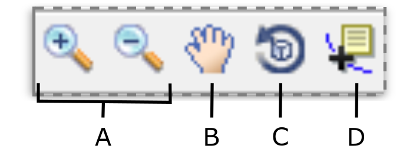

The generic structure of the analysis window is made of three basic elements: the menu bar (with docking icon), toolbar, and workspace [(not to be confused with the MATLAB workspace)], as displayed in Fig. 1:
Fig. 1: Analysis window of {Signal Analysis} module. A Menu bar; B Toolbar; C Workspace; D Docking icon
Menu bar
The menu bar contains File and Save submenus which respond to a single mouse click. The File submenu is used to import data and displays options to load from a .csv or .mat file.
The Save submenu contains a list of submenus (indicated by a filled right arrow head), which respond to hovering the mouse. These provide options for saving your results in various tabular data and figure formats, which
are explored in more detail in Saving Results.
Toolbar
The toolbar contains five icons, labelled in Fig. 2, that can be selected with a single-click to perform actions on figure axes. [tool-tip for figure axes: the regions of the workspace with a white background spanned by axes, part of graphics object hierarchy]
These tools, represented by their icons, are native to MATLAB and are standard features of figures. They provide mouse-based manipulation of the axes view (A-C), as well as graphical data display capabilities (D):

Fig. 2: Analysis window toolbar. A Zoom-in tool (plus sign) and zoom-out (minus sign); B Pan; C Rotate; D Data cursor
Each tool can be selected with a single-click on the associated icon, and [undo]
A
Zoom-in/zoom-out
Enables and disables expanding (zoom-in)/contracting (zoom-out) of figure axes.
To use, select the desired icon and position the cursor within the axes and over the region to concentrate on, then single-click to activate. To re-define the horizontal and vertical limits of the graph visible in the axes, select the zoom-in tool then single-click and hold, moving the mouse to raise a border which defines the selection region, then release to expand the axes view to the border limits.
B
Pan
Enables and disables panning for figure axes.
To use, select the icon and position the cursor within the axes, then single-click and hold, moving the mouse to pan across the axes. Movement of the axes can be
constrained as vertical or horizontal only by right-clicking in the figure axes and selecting Pan options, then the desired option.
C
Rotate 3D
Enables and disables rotation on axes and all contained graphic objects in three-dimensional space.
To use, select the icon and position the cursor in the axes, then single-click and hold, moving the mouse to rotate {axis of rotation?}.
D
Data cursor
Enables identification of multiple points in any axes by displaying x-, y- and z- (when defined) coordinates.
To use, select the icon and position the cursor within the axes. Place the crosshairs over the desired graph [element] coordinate and single-click to raise a datatip and label displaying the coordinate values. To move the datatip,
place the cursor over the black square marker, then single-click and hold, moving the mouse to re-locate the label, or alternatively select the data marker and use the arrow keys to re-position.
Multiple datatips can be placed on a plot: to create a new datatip, right-click anywhere in the workspace, then select Create New Datatip, or alternatively place the crosshairs at the desired coordinate and press Shift + Click.
The zoom, pan and rotate view operations can be undone in a step-wise manner by in the menu bar selecting Edit > Undo Command, or alternatively pressing Ctrl + Z. If multiple axes have been edited with the view tools
Fig. 2A-C,
the Undo Command will sequentially revert these operations in the order they were carried out. To reset the axes view to its original form, select any of the view tools and right-click within the axes,
then select Reset to Original View. To remove a datatip, right-click anywhere in the workspace whilst in the data cursor mode and select Delete Current Datatip, which will remove the last selected data marker and label, or alternatively select the datatip you wish to delete with the cursor and press Del.
Any modifications made to graphs with these tools remain when the figure is saved. A figure axes [/graph] can be manipulated with these tools at any stage, including once saved and opened in a separate figure window.
Workspace
The workspace is a collection of panels containing elements such as dialog boxes for input, axes for plotting and buttons for initialising processes. The workspace is explored in more detail in the next section.
Docking icon
A figure window such as the analysis window can be re-opened as a figure tab in the MATLAB desktop using the docking tool. Although this offers the ability to quickly switch between analysis window tabs (and other figures), we do not recommend docking the analysis windows {explain why?}. The docking tool is however a useful tool when editing figures of your results, which is discussed in Saving Results.